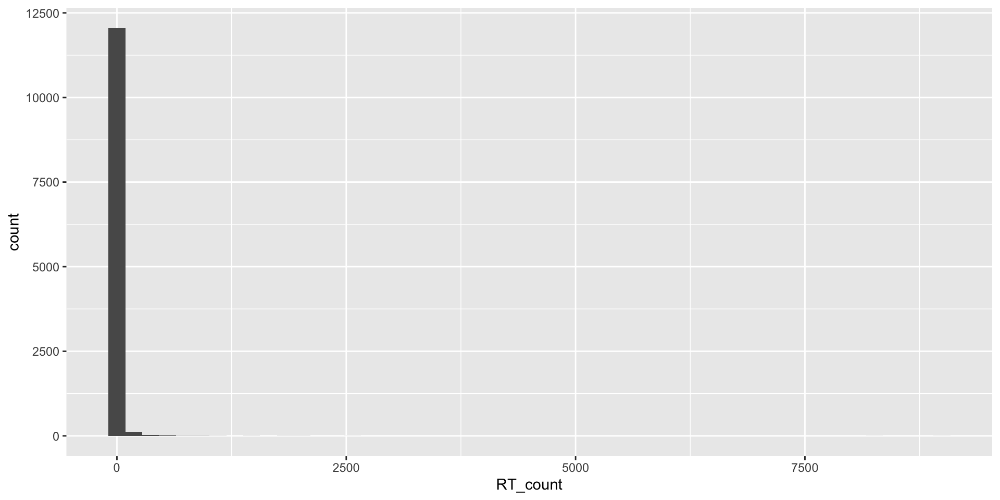

Last updated: 2020-05-03
Checks: 6 1
Knit directory: hatelab_website/
This reproducible R Markdown analysis was created with workflowr (version 1.4.0). The Checks tab describes the reproducibility checks that were applied when the results were created. The Past versions tab lists the development history.
Great! Since the R Markdown file has been committed to the Git repository, you know the exact version of the code that produced these results.
Great job! The global environment was empty. Objects defined in the global environment can affect the analysis in your R Markdown file in unknown ways. For reproduciblity it’s best to always run the code in an empty environment.
The command set.seed(20191014) was run prior to running the code in the R Markdown file. Setting a seed ensures that any results that rely on randomness, e.g. subsampling or permutations, are reproducible.
Great job! Recording the operating system, R version, and package versions is critical for reproducibility.
To ensure reproducibility of the results, delete the cache directory corona_identity_filter_sizes_cache and re-run the analysis. To have workflowr automatically delete the cache directory prior to building the file, set delete_cache = TRUE when running wflow_build() or wflow_publish().
Great job! Using relative paths to the files within your workflowr project makes it easier to run your code on other machines.
Great! You are using Git for version control. Tracking code development and connecting the code version to the results is critical for reproducibility. The version displayed above was the version of the Git repository at the time these results were generated.
Note that you need to be careful to ensure that all relevant files for the analysis have been committed to Git prior to generating the results (you can use wflow_publish or wflow_git_commit). workflowr only checks the R Markdown file, but you know if there are other scripts or data files that it depends on. Below is the status of the Git repository when the results were generated:
Ignored files:
Ignored: .DS_Store
Ignored: .Rhistory
Ignored: .Rproj.user/
Ignored: analysis/.DS_Store
Ignored: analysis/corona_identity_filter_sizes_cache/
Ignored: data/.DS_Store
Ignored: data/brexit_sole_keyword_ratios_dec19/.DS_Store
Ignored: docs/.DS_Store
Ignored: docs/figure/.DS_Store
Untracked files:
Untracked: analysis/trump_muslim.rmd
Untracked: data/export/
Untracked: data/hatedash_comparison_skim.rds
Untracked: data/trump_tweets_html_body.txt
Untracked: data/trump_tweets_islam.json
Untracked: data/trump_tweets_islam_muslim.csv
Unstaged changes:
Modified: analysis/brexit_single_keyword_initial_numbers.Rmd
Deleted: docs/.nojekyll
Deleted: docs/HSD_brex_sep19_files/all.css
Deleted: docs/HSD_brex_sep19_files/css
Deleted: docs/HSD_brex_sep19_files/main.9a50a41e7d85cf90d27a.js
Deleted: docs/HSD_brex_sep19_files/polyfills.681b44b3f292a3819611.js
Deleted: docs/HSD_brex_sep19_files/runtime.26209474bfa8dc87a77c.js
Deleted: docs/HSD_brex_sep19_files/styles.2c55fbc404b14f01ab1b.css
Deleted: docs/assets/html_viz/Hate Speech Dashboard.htm
Deleted: docs/assets/html_viz/Hate Speech Dashboard_files/all.css
Deleted: docs/assets/html_viz/Hate Speech Dashboard_files/css
Deleted: docs/assets/html_viz/Hate Speech Dashboard_files/main.9a50a41e7d85cf90d27a.js
Deleted: docs/assets/html_viz/Hate Speech Dashboard_files/polyfills.681b44b3f292a3819611.js
Deleted: docs/assets/html_viz/Hate Speech Dashboard_files/runtime.26209474bfa8dc87a77c.js
Deleted: docs/assets/html_viz/Hate Speech Dashboard_files/styles.2c55fbc404b14f01ab1b.css
Deleted: docs/figure/brexit_single_keyword_initial_numbers.Rmd/hate_speech_numbers-1.svg
Deleted: docs/figure/brexit_single_keyword_initial_numbers.Rmd/hate_speech_ratio-1.eps
Deleted: docs/figure/brexit_single_keyword_initial_numbers.Rmd/ratio_and_numbers_one_plot-1.eps
Deleted: docs/figure/brexit_single_keyword_initial_numbers.Rmd/unnamed-chunk-12-1.eps
Deleted: docs/figure/brexit_single_keyword_initial_numbers.Rmd/unnamed-chunk-12-1.svg
Deleted: docs/figure/brexit_single_keyword_initial_numbers.Rmd/unnamed-chunk-13-1.svg
Deleted: docs/figure/brexit_single_keyword_initial_numbers.Rmd/unnamed-chunk-14-1.svg
Deleted: docs/figure/brexit_single_keyword_initial_numbers.Rmd/unnamed-chunk-15-1.svg
Note that any generated files, e.g. HTML, png, CSS, etc., are not included in this status report because it is ok for generated content to have uncommitted changes.
These are the previous versions of the R Markdown and HTML files. If you’ve configured a remote Git repository (see ?wflow_git_remote), click on the hyperlinks in the table below to view them.
| File | Version | Author | Date | Message |
|---|---|---|---|---|
| Rmd | d3e32cb | Sefa Ozalp | 2020-05-03 | wflow_publish(“analysis/corona_identity_filter_sizes.Rmd”) |
| html | a88718b | Sefa Ozalp | 2020-05-03 | Build site. |
| Rmd | f16100c | Sefa Ozalp | 2020-05-03 | wflow_publish(“analysis/corona_identity_filter_sizes.Rmd”) |
This document explores the ratio of the tweets that need to be classified for the HateDash fpr the COVID-19 collection. I’ve randomly selected 2020-04-10 and working with tweets sent that day. Given the number of tweets ingested are very consistent across hours and days within this particular dataset, we can confidently extrapolate findings from this day to the dataset.
library(tidyverse)
library(fs)
library(furrr)
plan(multiprocess)Warning: [ONE-TIME WARNING] Forked processing ('multicore') is disabled
in future (>= 1.13.0) when running R from RStudio, because it is
considered unstable. Because of this, plan("multicore") will fall
back to plan("sequential"), and plan("multiprocess") will fall back to
plan("multisession") - not plan("multicore") as in the past. For more
details, how to control forked processing or not, and how to silence this
warning in future R sessions, see ?future::supportsMulticore
Warning: The above code chunk cached its results, but it won’t be re-run if previous chunks it depends on are updated. If you need to use caching, it is highly recommended to also set knitr::opts_chunk$set(autodep = TRUE) at the top of the file (in a chunk that is not cached). Alternatively, you can customize the option dependson for each individual chunk that is cached. Using either autodep or dependson will remove this warning. See the knitr cache options for more details.
dataset <- fs::dir_ls("data/export/") %>%
map_df(~ read_rds(.x) %>%
select(text, status_id, created_at, screen_name, is_quote, is_retweet, lang, retweet_text,retweet_status_id))
Warning: The above code chunk cached its results, but it won’t be re-run if previous chunks it depends on are updated. If you need to use caching, it is highly recommended to also set knitr::opts_chunk$set(autodep = TRUE) at the top of the file (in a chunk that is not cached). Alternatively, you can customize the option dependson for each individual chunk that is cached. Using either autodep or dependson will remove this warning. See the knitr cache options for more details.
dataset %>%
skimr::skim()Skim summary statistics
n obs: 3980020
n variables: 9
── Variable type:character ───────────────────────────────────────────────────────
variable missing complete n min max empty n_unique
lang 0 3980020 3980020 2 3 0 66
retweet_status_id 1177329 2802691 3980020 18 19 0 406874
retweet_text 1177329 2802691 3980020 1 1024 0 421870
screen_name 0 3980020 3980020 1 17 0 2238756
status_id 0 3980020 3980020 19 19 0 3980014
text 0 3980020 3980020 1 1024 0 1413005
── Variable type:logical ─────────────────────────────────────────────────────────
variable missing complete n mean
is_quote 0 3980020 3980020 0.2
is_retweet 0 3980020 3980020 0.7
count
FAL: 3178462, TRU: 801558, NA: 0
TRU: 2802691, FAL: 1177329, NA: 0
── Variable type:POSIXct ─────────────────────────────────────────────────────────
variable missing complete n min max median
created_at 0 3980020 3980020 2020-04-09 2020-04-10 2020-04-10
n_unique
86393
Warning: The above code chunk cached its results, but it won’t be re-run if previous chunks it depends on are updated. If you need to use caching, it is highly recommended to also set knitr::opts_chunk$set(autodep = TRUE) at the top of the file (in a chunk that is not cached). Alternatively, you can customize the option dependson for each individual chunk that is cached. Using either autodep or dependson will remove this warning. See the knitr cache options for more details.
We have 3980020 tweets sent on this particular day.
dataset_eng <- dataset %>%
filter(lang == "en")
Warning: The above code chunk cached its results, but it won’t be re-run if previous chunks it depends on are updated. If you need to use caching, it is highly recommended to also set knitr::opts_chunk$set(autodep = TRUE) at the top of the file (in a chunk that is not cached). Alternatively, you can customize the option dependson for each individual chunk that is cached. Using either autodep or dependson will remove this warning. See the knitr cache options for more details.
By filtering Englihs tweets only, I reduced the size of tweets 0.4678024%.
Retweets are verbatim duplications of original tweets but they appear as seperately in the Twitter data stream. It is redundant to classify retweets seperately, given our classification is costly. Therefore, it is better to classify original tweets and get the classification scores for retweets from original tweets. Below, I will demonstrate how to do this and how much classification cost it should save. Note that quotes (comment added to retweets) should be treated as original tweets.
authored_tweets <- dataset_eng_filtered%>%
filter(is.na(retweet_status_id))
nrow(authored_tweets)[1] 32026
Warning: The above code chunk cached its results, but it won’t be re-run if previous chunks it depends on are updated. If you need to use caching, it is highly recommended to also set knitr::opts_chunk$set(autodep = TRUE) at the top of the file (in a chunk that is not cached). Alternatively, you can customize the option dependson for each individual chunk that is cached. Using either autodep or dependson will remove this warning. See the knitr cache options for more details.
We can identify original tweets (authored_tweets) by filtering all observations where retweet_status_id is NA. We have 32026 authored (that are not retweets) tweets available in this dataset. Using the same logic in reverse, we can also find retweets by filtering the dataset where retweet_status_id is not NA.
retweets <- dataset_eng_filtered %>%
filter(!is.na(retweet_status_id))
nrow(retweets)[1] 127160
Warning: The above code chunk cached its results, but it won’t be re-run if previous chunks it depends on are updated. If you need to use caching, it is highly recommended to also set knitr::opts_chunk$set(autodep = TRUE) at the top of the file (in a chunk that is not cached). Alternatively, you can customize the option dependson for each individual chunk that is cached. Using either autodep or dependson will remove this warning. See the knitr cache options for more details.
rt_counts <- retweets %>% # counting of RTs of original tweets
count(retweet_status_id, name = 'RT_count') %>%
arrange(desc(RT_count))
rt_counts# A tibble: 12,233 x 2
retweet_status_id RT_count
<chr> <int>
1 1248450422869602304 8994
2 1248556133737996291 8268
3 1248262397854396417 2605
4 1247542368514887690 1995
5 1248296585118642179 1939
6 1248534148085506048 1904
7 1248454747490619392 1860
8 1248430523178864646 1518
9 1248291142149398529 1398
10 1248551668070768641 1119
# … with 12,223 more rowsrt_counts %>% skimr::skim()Skim summary statistics
n obs: 12233
n variables: 2
── Variable type:character ───────────────────────────────────────────────────────
variable missing complete n min max empty n_unique
retweet_status_id 0 12233 12233 19 19 0 12233
── Variable type:integer ─────────────────────────────────────────────────────────
variable missing complete n mean sd p0 p25 p50 p75 p100 hist
RT_count 0 12233 12233 10.39 125.99 1 1 1 3 8994 ▇▁▁▁▁▁▁▁
Warning: The above code chunk cached its results, but it won’t be re-run if previous chunks it depends on are updated. If you need to use caching, it is highly recommended to also set knitr::opts_chunk$set(autodep = TRUE) at the top of the file (in a chunk that is not cached). Alternatively, you can customize the option dependson for each individual chunk that is cached. Using either autodep or dependson will remove this warning. See the knitr cache options for more details.
Accordingly, 127160 retweets are actually replications of 12233original/authored tweets which were retweeted between 1 and 8994 times, with mean RT count being (10.39). The histogram of RT counts look like the following:
rt_counts %>%
ggplot(aes(RT_count))+
geom_histogram(bins=50)
| Version | Author | Date |
|---|---|---|
| a88718b | Sefa Ozalp | 2020-05-03 |
Warning: The above code chunk cached its results, but it won’t be re-run if previous chunks it depends on are updated. If you need to use caching, it is highly recommended to also set knitr::opts_chunk$set(autodep = TRUE) at the top of the file (in a chunk that is not cached). Alternatively, you can customize the option dependson for each individual chunk that is cached. Using either autodep or dependson will remove this warning. See the knitr cache options for more details.
As seen, some tweets get retweeted thousands of times. We can reduce the classification cost by running the classification once on original/authored tweets and use these classification scores for RTs of the original/authored tweet. As this is a database operation, which is very cheap, by acquiring classification scores for RTs from original/authored tweets, we can save considerable amount of money.
sessionInfo()R version 3.6.1 (2019-07-05)
Platform: x86_64-apple-darwin15.6.0 (64-bit)
Running under: macOS Mojave 10.14.6
Matrix products: default
BLAS: /Library/Frameworks/R.framework/Versions/3.6/Resources/lib/libRblas.0.dylib
LAPACK: /Library/Frameworks/R.framework/Versions/3.6/Resources/lib/libRlapack.dylib
locale:
[1] en_GB.UTF-8/en_GB.UTF-8/en_GB.UTF-8/C/en_GB.UTF-8/en_GB.UTF-8
attached base packages:
[1] stats graphics grDevices utils datasets methods base
other attached packages:
[1] furrr_0.1.0 future_1.14.0 fs_1.3.1 forcats_0.4.0
[5] stringr_1.4.0 dplyr_0.8.5 purrr_0.3.3 readr_1.3.1
[9] tidyr_1.0.0 tibble_2.1.3 ggplot2_3.3.0 tidyverse_1.2.1
loaded via a namespace (and not attached):
[1] tidyselect_0.2.5 xfun_0.9 listenv_0.7.0 haven_2.1.1
[5] lattice_0.20-38 colorspace_1.4-1 vctrs_0.2.1 generics_0.0.2
[9] htmltools_0.3.6 yaml_2.2.0 utf8_1.1.4 rlang_0.4.4
[13] pillar_1.4.3 glue_1.3.1 withr_2.1.2 modelr_0.1.5
[17] readxl_1.3.1 lifecycle_0.1.0 munsell_0.5.0 gtable_0.3.0
[21] workflowr_1.4.0 cellranger_1.1.0 rvest_0.3.4 codetools_0.2-16
[25] evaluate_0.14 labeling_0.3 knitr_1.25 parallel_3.6.1
[29] fansi_0.4.0 broom_0.5.4 Rcpp_1.0.3 backports_1.1.5
[33] scales_1.0.0 jsonlite_1.6 hms_0.5.2 digest_0.6.23
[37] stringi_1.4.3 grid_3.6.1 rprojroot_1.3-2 cli_2.0.1
[41] tools_3.6.1 magrittr_1.5 crayon_1.3.4 whisker_0.4
[45] pkgconfig_2.0.3 zeallot_0.1.0 xml2_1.2.2 skimr_1.0.7
[49] lubridate_1.7.4 assertthat_0.2.1 rmarkdown_2.1 httr_1.4.1
[53] rstudioapi_0.11 R6_2.4.0 globals_0.12.4 nlme_3.1-141
[57] git2r_0.26.1 compiler_3.6.1
Warning: The above code chunk cached its results, but it won’t be re-run if previous chunks it depends on are updated. If you need to use caching, it is highly recommended to also set knitr::opts_chunk$set(autodep = TRUE) at the top of the file (in a chunk that is not cached). Alternatively, you can customize the option dependson for each individual chunk that is cached. Using either autodep or dependson will remove this warning. See the knitr cache options for more details.